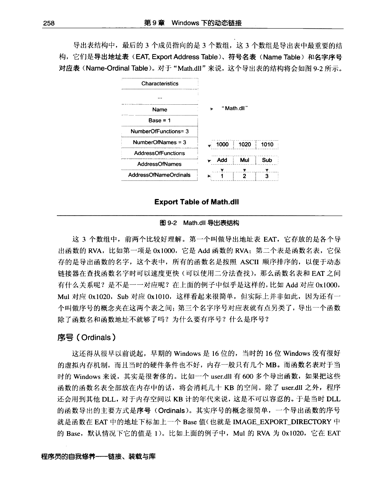
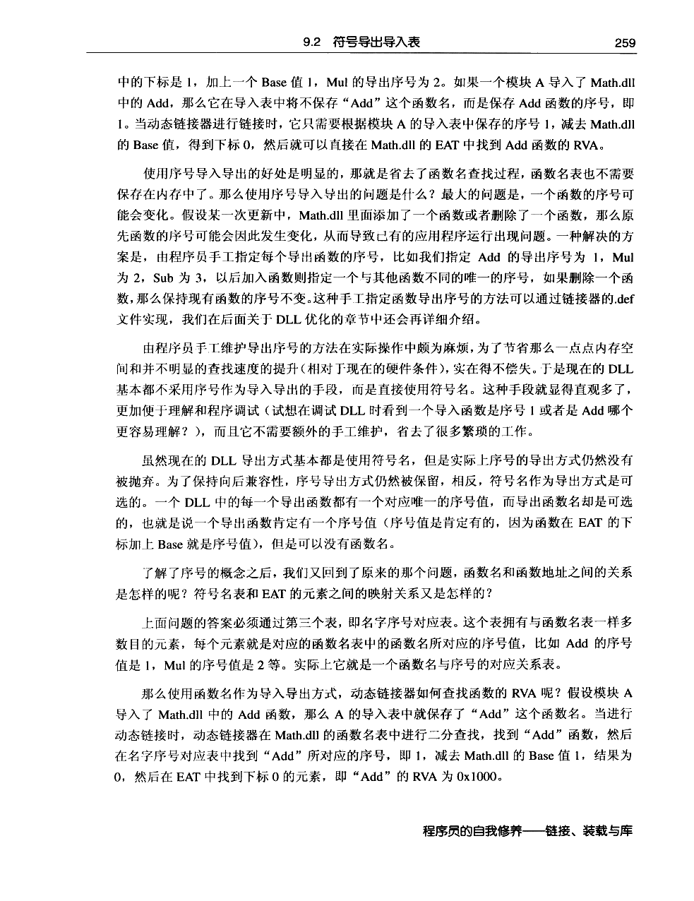
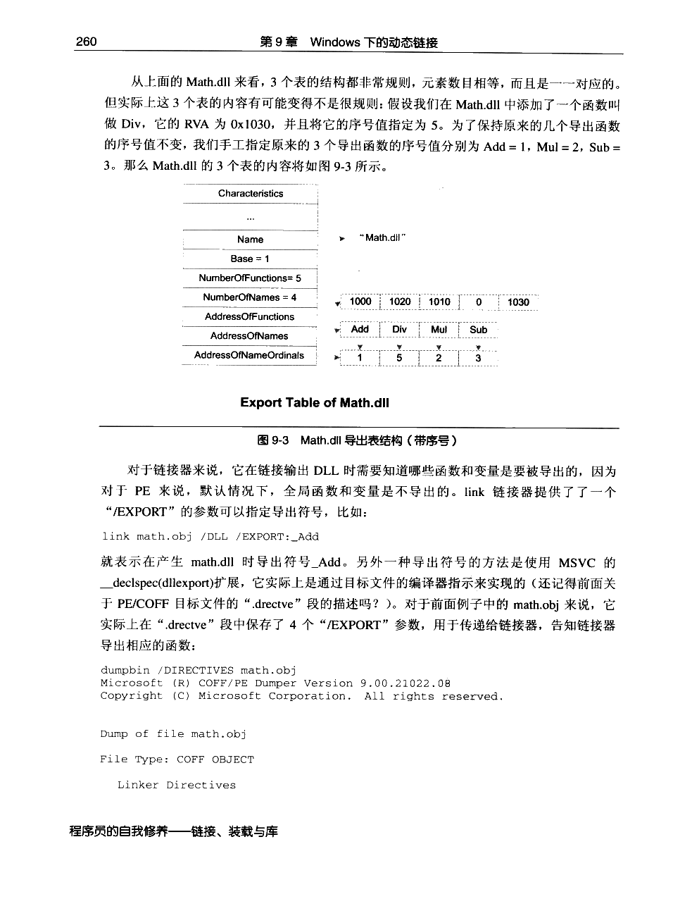
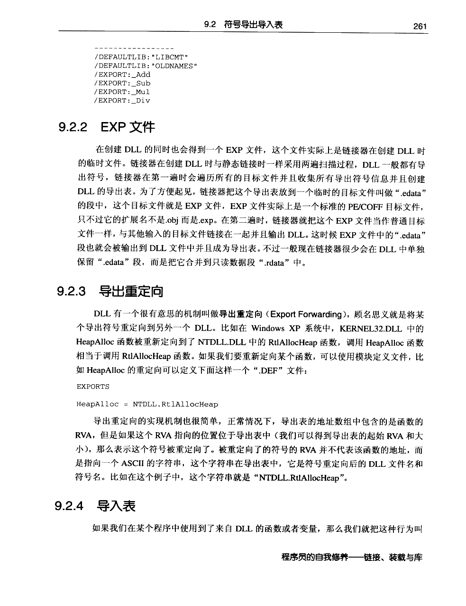
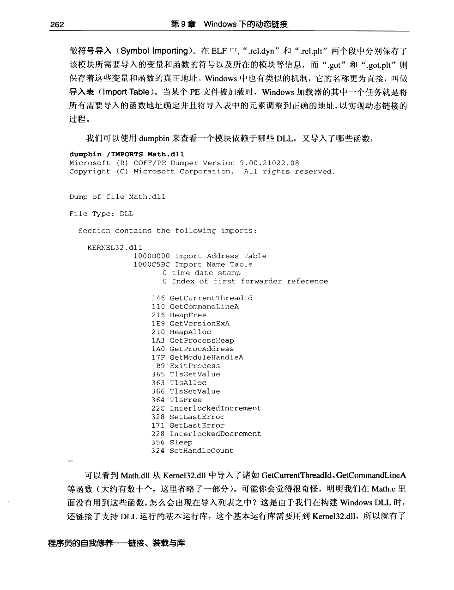
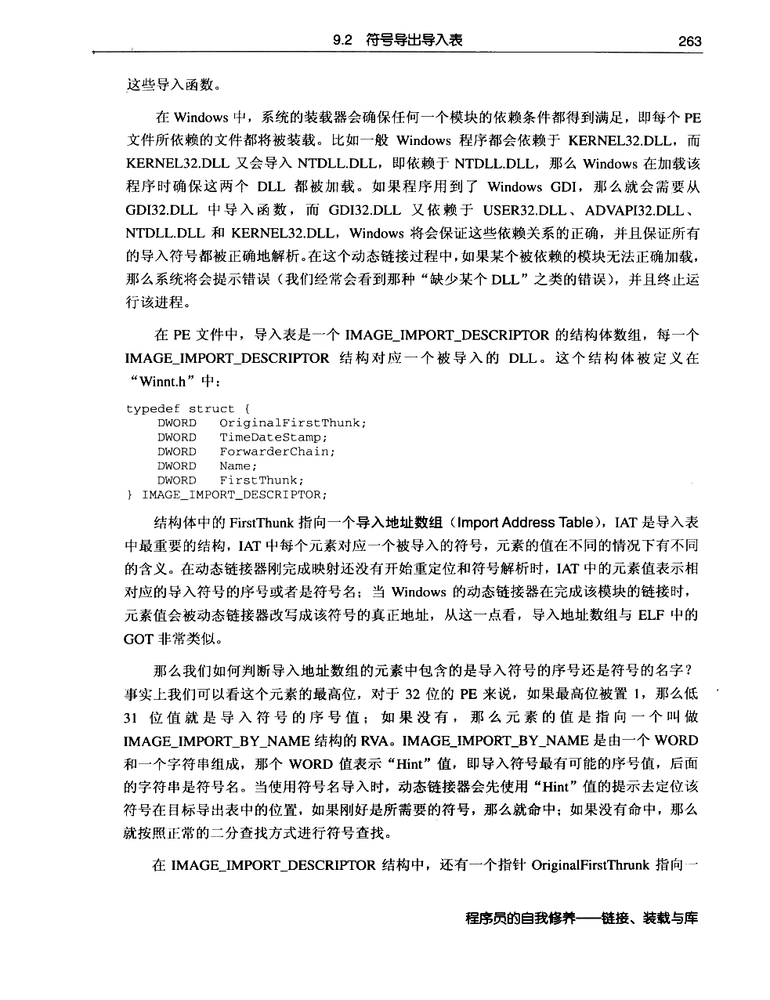
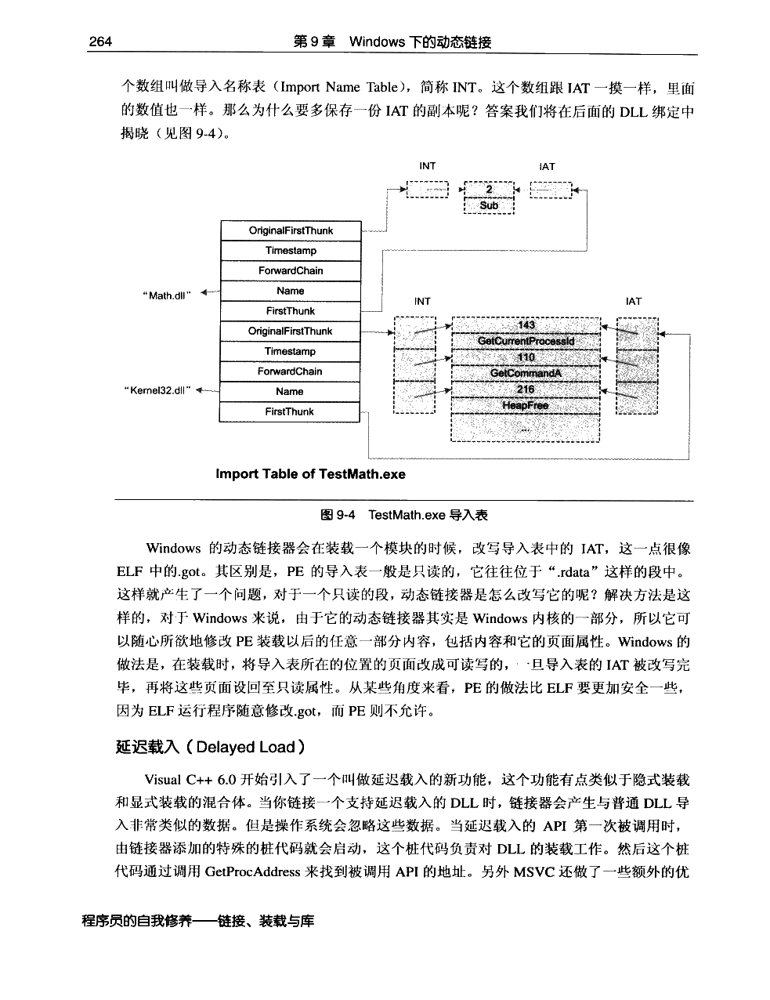
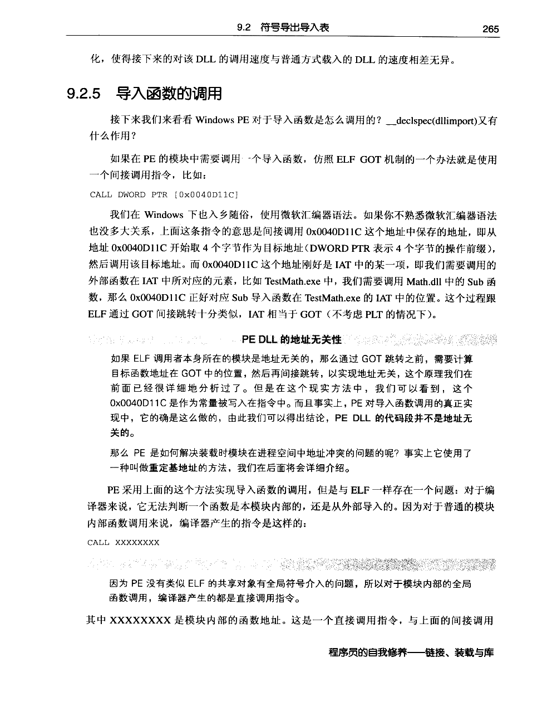
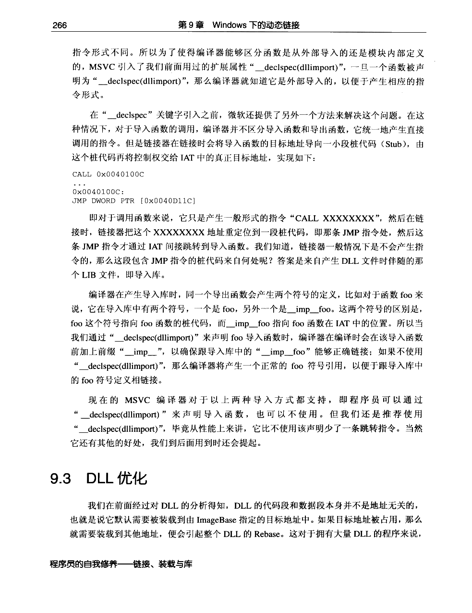

← 返回正文9.2 符号导出导入表
PDF 第 280 页 · 书内第 257 页 PDF 第 281 页 · 书内第 258 页
PDF 第 281 页 · 书内第 258 页
PDF 第 282 页 · 书内第 259 页
PDF 第 283 页 · 书内第 260 页
PDF 第 284 页 · 书内第 261 页
PDF 第 285 页 · 书内第 262 页
PDF 第 286 页 · 书内第 263 页
PDF 第 287 页 · 书内第 264 页
PDF 第 288 页 · 书内第 265 页
PDF 第 289 页 · 书内第 266 页